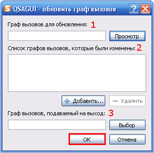

Содержание
Что такое QSAGUI?
Начало
Создание графа вызовов
Соединение графов вызовов
Очистка графа вызовов
Обновление графа вызовов
Получение списков файлов/функций
Показать граф вызовов
Настройки
|
Обновление графа вызовов
Используйте "Граф вызовов" -> "Обновление..." или кнопку "Обновление" на панели инструмментов или сочетание клавиш "Ctrl+U".

1. Выберите граф вызовов для обновления.
2. Добавьте графы вызовов для изменения в список, используют кнопки "Добавить..." и "Удалить" для управления элементами.
3. Выберите имя для графа вызовов, подаваемого на выход.
Нажмите кнопку "OK" для обновления графа вызовов.
|